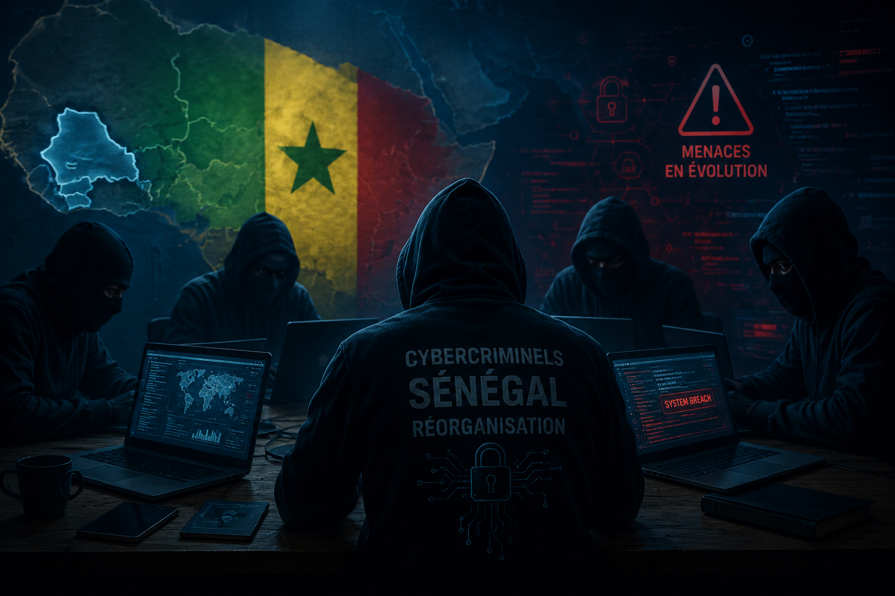

Le Sénégal renforce sa stratégie nationale de cybersécurité

Avec l'accélération de la transformation numérique, le Sénégal fait face à de nouveaux défis liés à la cybersécurité. En effet, l'utilisation croissante des services numériques, des plateformes en ligne et des systèmes informatiques augmente également les risques liés aux cyberattaques.
Face à cette situation, le pays renforce sa stratégie nationale de cybersécurité afin de mieux protéger son espace numérique, ses infrastructures numériques, les institutions publiques, les entreprises et les citoyens contre les nouvelles menaces informatiques.
Renforcer la protection de l'espace numérique sénégalais
Les cybercriminels développent constamment de nouvelles techniques pour exploiter les failles des systèmes informatiques. Ainsi, les attaques par hameçonnage (phishing), les logiciels malveillants ou encore les vols de données représentent des menaces importantes pour la sécurité numérique.
C'est pourquoi les autorités sénégalaises mettent en place différentes actions visant à améliorer la protection des systèmes d'information. Ces mesures concernent notamment le renforcement des outils de sécurité, la formation des spécialistes en cybersécurité et l'amélioration des capacités de détection et de réaction face aux incidents numériques.
La sensibilisation au cœur de la stratégie
Par ailleurs, la cybersécurité ne repose pas uniquement sur les outils technologiques. Les comportements des utilisateurs jouent également un rôle essentiel dans la protection contre les menaces numériques.
Ainsi, des campagnes de sensibilisation sont développées afin d'aider les citoyens, les administrations et les entreprises à adopter de meilleures bonnes pratiques numériques. Ces actions encouragent notamment l'utilisation de mots de passe sécurisés, la protection des données personnelles et la vigilance face aux messages suspects.
Une coopération nécessaire pour mieux faire face aux cybermenaces
De plus, le Sénégal renforce sa coopération avec différents acteurs nationaux et internationaux afin de partager des connaissances et de développer de nouvelles solutions de sécurité.
Cette collaboration permet au pays de mieux anticiper l'évolution des cybermenaces et de renforcer sa capacité de réponse face aux incidents numériques. Elle constitue un élément essentiel pour garantir la sécurité des services numériques.
Vers un environnement numérique plus sécurisé
En renforçant sa stratégie nationale de cybersécurité, le Sénégal affirme sa volonté de construire un environnement numérique plus sûr et plus résistant face aux attaques.
Cependant, la réussite de cette démarche dépend de l'implication de tous les acteurs : institutions, entreprises et citoyens. La cybersécurité devient donc une responsabilité collective pour protéger les informations, les services essentiels et l'avenir numérique du pays.
Avis CyberShield
Le renforcement de la stratégie nationale de cybersécurité du Sénégal représente une avancée importante face aux nouvelles menaces numériques. Cependant, la technologie seule ne suffit pas : la protection du cyberespace dépend également de la vigilance et de la responsabilité de chaque utilisateur.
Pour construire un environnement numérique plus sûr, il est essentiel de développer une véritable culture de la cybersécurité. La prévention, la sensibilisation et l'adoption de bonnes pratiques restent les meilleures solutions pour limiter les risques de cyberattaques.